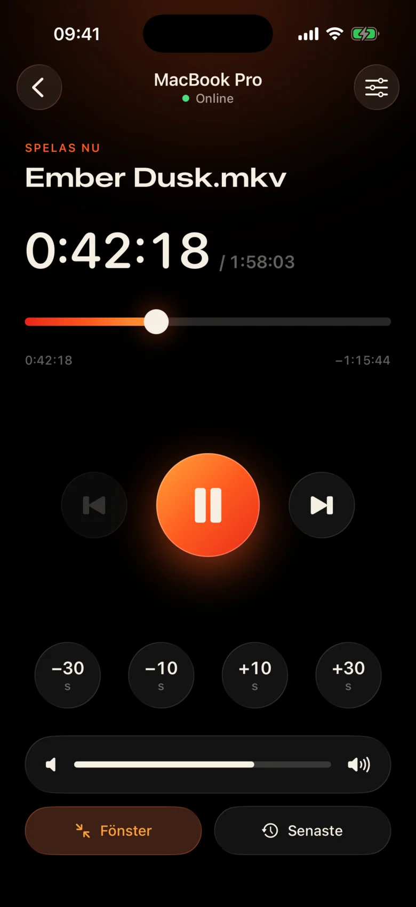
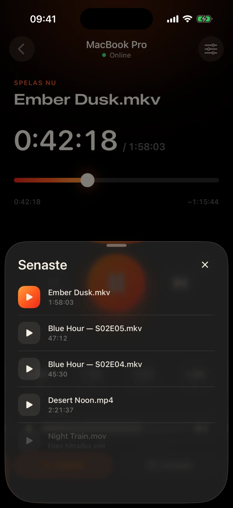
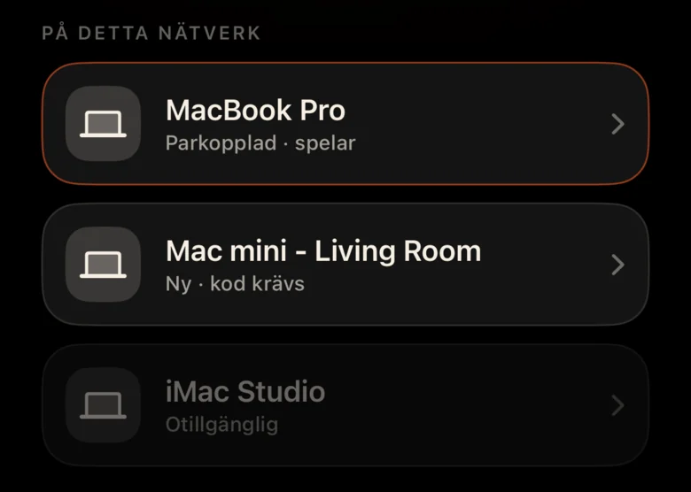
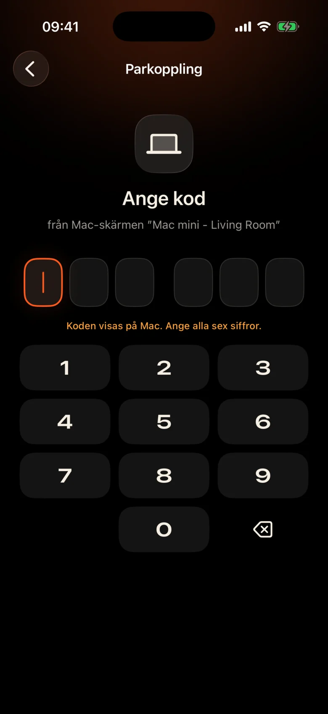

Mac är tvärs över rummet
Den är ansluten till projektorn vid väggen. Varje paus innebär att gå upp, hitta styrplattan i mörkret och kisa mot en liten kontrollbar.
Kinrox: tryck pausa på telefonen i handen.
Kinrox spelar upp vilken video som helst på din Mac — och förvandlar din iPhone till sin fjärrkontroll. MacBook på projektorn, du i soffan: pausa, hoppa tillbaka 10 sekunder, sänk volymen eller starta nästa avsnitt utan att lämna filten.


Den är ansluten till projektorn vid väggen. Varje paus innebär att gå upp, hitta styrplattan i mörkret och kisa mot en liten kontrollbar.
Kinrox: tryck pausa på telefonen i handen.
Viskningar i en scen, explosioner i nästa — och någon sover redan i nästa rum.
Kinrox: ett volymreglage precis under tummen.
Webbpaneler med IP-adresser och lösenord, en webbläsarflik som somnar, knappar gjorda för ett skrivbord — inte för en soffa.
Kinrox: hittar din Mac själv, parar med en kod.

Stora mål, ett mörkt varmt tema och ett lätt tryck av haptik under varje press. Du kan använda den utan att titta bort från filmen.
Alla knappar är stora nog att träffa även när du är halvsovande.
Missat en rad? Ett tryck tillbaka. Hoppa över introt med två.
Kinroxs egen volym, från 0 till 100. Mac:s systemvolym förblir orörd.
Föregående och nästa fil från samma mapp, i Finder-ordning.
Välj något du sett tidigare – det öppnas på Mac.
Dra tidslinjen till vilket ögonblick som helst, växla helskärm från soffan.
Inga IP-adresser, inga lösenord, inget konto. Efter den första koden återansluter din iPhone av sig själv.
Dra en fil till Kinrox eller tryck på ⌘ O. Fjärrservern är på som standard.
Kinrox dyker upp på egen hand när båda enheterna är på samma Wi-Fi.

Mac visar en kod som lever i två minuter. Tre felförsök och det är borta.


Alex’s iPhone vill styra Kinrox. Ange koden på telefonen.
 Koden går ut om 1:47
Koden går ut om 1:47
Videon är gränssnittet. Ett tunt lager glas dyker upp när du behöver det och gömmer sig efter tre sekunder.

Byggd på libmpv, motorn bakom mpv och IINA. Välj inbäddat eller externt ljud och undertexter. VideoToolbox hanterar hårdvaruavkodning.
Kinrox radar upp videorna i mappen och startar nästa när ett avsnitt slutar - "2" före "10", som Finder.
Tangentbord ⏯ tangenter, kontrollcenter och nu spelas kontroll Kinrox. Upp till 20 senaste filer väntar på startskärmen.
Dina Mac och iPhone utbyter uppspelningskommandon direkt över ditt lokala nätverk. Dina videor stannar på Mac.
Upptäckt över Bonjour, anslutningar endast från ditt eget subnät. Offentliga adresser och mobiltelefoner vägras.
Varje kommando färdas i en krypterad kanal. Parning av tokens finns i nyckelringen på båda enheterna.
X25519HKDF-SHA256ChaCha20-Poly1305Inga konton eller användningsanalyser. Mac kontrollerar ett offentligt uppdateringsflöde dagligen utan unika identifierare eller systemprofilering. Denna webbplats har inga analyser eller cookies.
Fjärrkontrollen ser titlar och varaktigheter, aldrig filsökvägar. Att öppna en ny fil löses på Mac.
Kinrox är skrivet i Swift 6 och SwiftUI ovanpå libmpv. Varje rad på spelaren, fjärrkontrollen och protokollet finns på GitHub.
Bygg från källan# Xcode 26.5, XcodeGen and mpv from Homebrew
brew install xcodegen mpv pkg-config
git clone https://github.com/awaik/Kinrox.git
cd Kinrox
cp -n Config/Signing.local.xcconfig.example \
Config/Signing.local.xcconfig
# Set your team: docs/runbooks/RUNBOOK-BUILD-AND-SIGNING.md
./Scripts/check-env.sh
./Scripts/generate.sh
xcodebuild -workspace Kinrox.xcworkspace \
-scheme PlayerMac -configuration Debug \
-destination 'platform=macOS,arch=arm64' \
-derivedDataPath DerivedData build
open DerivedData/Build/Products/Debug/Kinrox.appUppspelning och fjärrkontroll fungerar utan internetåtkomst när Mac och iPhone delar ett Wi-Fi-nätverk. Mac använder HTTPS för dagliga uppdateringskontroller och laddar ner en uppdatering när du väljer att installera den.
Ja. Kinrox spelar på allt som din Mac visar — en projektor, en TV över HDMI eller en skärm ansluten till AirPlay.
Macs med Apple silicon på macOS 14 Sonoma eller senare, och iPhones på iOS 17 eller senare. Intel Macs stöds inte ännu.
Ja. Varje iPhone parar en gång med sin egen kod; upp till fyra fjärrkontroller kan anslutas samtidigt. Du kan återkalla vilken som helst av dem i spelarinställningarna.
Ja. På Mac använder du knappen Ljud och undertexter eller menyerna Ljud och undertexter. Välj inbäddade spår, hitta externa filer i kapslade mappar eller stäng av undertexter. Kinrox kan komma ihåg ditt val för nästa avsnitt.
Ingenting. Kinrox är gratis och öppen källkod under GNU GPL v3.
Kinrox för Mac och iPhone. Gratis, öppen källkod och gjord för filmkvällar.